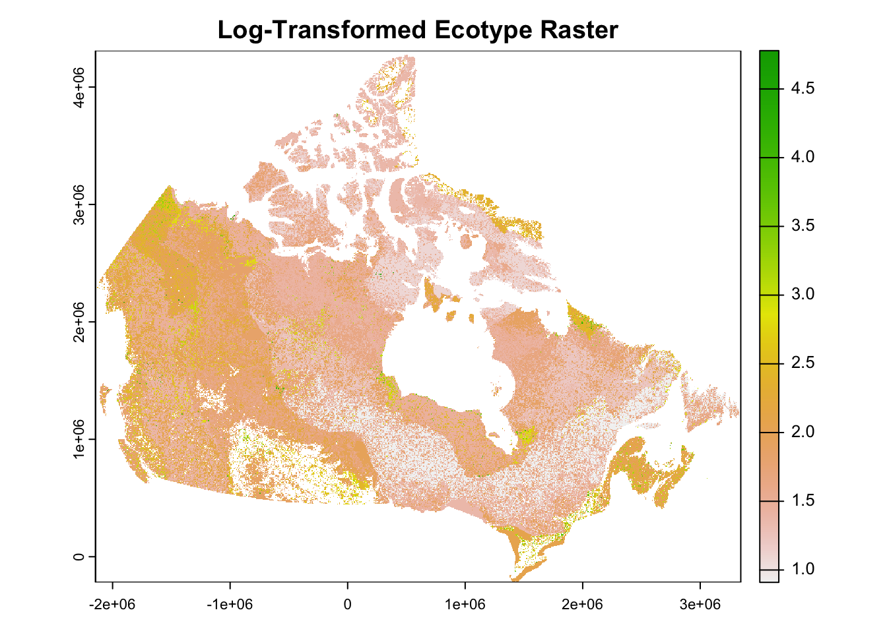
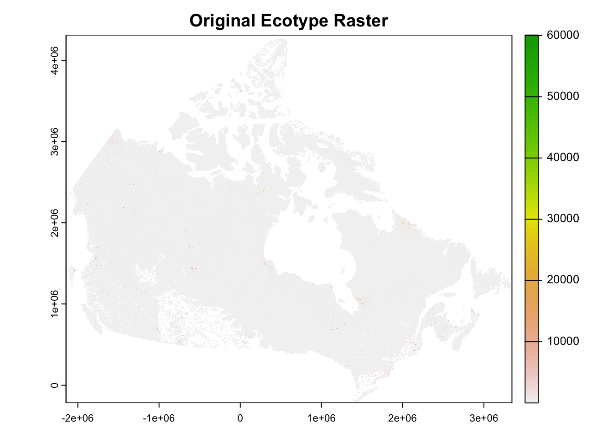

10 Ecozone Mosaic
10.1 Overview
This section outlines the mosaicking of each ecozone raster to create a single nationwide map of ecotype scores.
Each ecozone was processed independently to assign scores to its ecotypes, and then these individual rasters are mosaicked back together to produce the complete Canada-wide score raster.
Inputs
outputs/ecozone_rasters/: Folder containing all 15 ecozone rasters (*_score_raster.tif)
10.2 Mosaic Loop
10.2.1 Data Preparation
# Set mosaic output directory
tif_dir <- "outputs/ecozone_rasters/"
output_dir <- "outputs/ecozone_rasters/mosaic"
# List all *_score_raster.tif files
tif_files <- list.files(tif_dir, pattern = "_score_raster\\.tif$", full.names = TRUE)
# Sort for consistent ordering
tif_files <- sort(tif_files)
# Create initial working mosaic with the first raster
current_mosaic <- file.path(output_dir, "mosaic.tif")
file.copy(tif_files[1], current_mosaic, overwrite = TRUE)## [1] TRUE10.2.2 Loop Through and Join Ecozones
# Set mosaic output directory
for (i in 2:length(tif_files)) {
cat("Mosaicking", basename(tif_files[i]), "...\n")
r_base <- rast(current_mosaic)
r_new <- rast(tif_files[i])
temp_mosaic <- file.path(output_dir, paste0("temp_mosaic_", i, ".tif"))
mosaic_r <- mosaic(r_base, r_new, fun = "first",
filename = temp_mosaic,
overwrite = TRUE,
wopt = list(datatype = "FLT4S", gdal = c("COMPRESS=LZW", "TILED=YES")))
# Update working mosaic
file.copy(temp_mosaic, current_mosaic, overwrite = TRUE)
file.remove(temp_mosaic)
}
# Save the final mosaic
output_mosaic <- file.path(output_dir, "Canada_Ecozone_Score_Mosaic_ALL.tif")
file.copy(current_mosaic, output_mosaic, overwrite = TRUE)
cat("Final mosaic complete. Saved to:\n", output_mosaic, "\n")10.3 Log Scores
# Load the final raster if not already loaded
final_path <- "outputs/ecozone_rasters/mosaic/Canada_Ecozone_Score_Mosaic_ALL.tif"
r_final <- rast(final_path)
# Set values <= 0 to NA (log undefined for 0 or negative values)
r_final[r_final <= 0] <- NA
# Apply log10 transformation
r_log <- log10(r_final)
